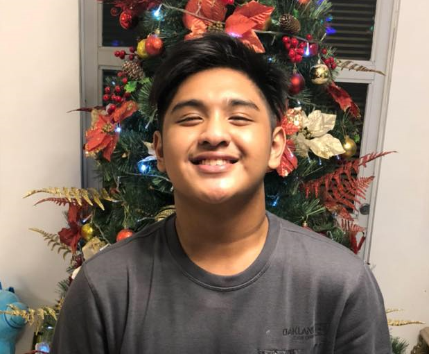

Sean Justine B. Santos
Web Developer
Contact
+639566687925
huseyosantos@gmail.com
Metro Manila, Marikina City
my skills
- Web Design
- Video Editing
- HTML-5
- CSS-3
- Java Script
- Python
awards
- YMC Leadership Certificate
- Kodego Full Stack Web Developer Certificate
profile
A committed college student, Aims a career in technology and improves both as an individual and as a member of a team. Being in a work setting has given me the confidence I need to advance in my profession as a full stack developer and overcome all the obstacles in my way. Being a person with an open mind and heart, having my talents pushed by technological and personal improvements, and being prepared to enter the tech industry.
EXPERIENCE
Tech Assisttant (Microsoft Office Apps) February 2014 - November 2016
Family Business
- Proficient in Microsoft office applications.
- Led a team of employees to be confident on working on Microsoft office application.
Adobe Premiere Pro Video Editor May 2020 - June 2021
Freelance
- Worked with foreign clients, satisfied with our built relationship.
- Made a strong bond with the team and built a workflow for continuos creation of the projects.
Education
Our Lady of Perpetual Succor College (2011 - 2021)
Science, Technology, Engineering and Math strand
Univeristy of the East ( 2021 - Present)
Bachelor of Science in Computer Science